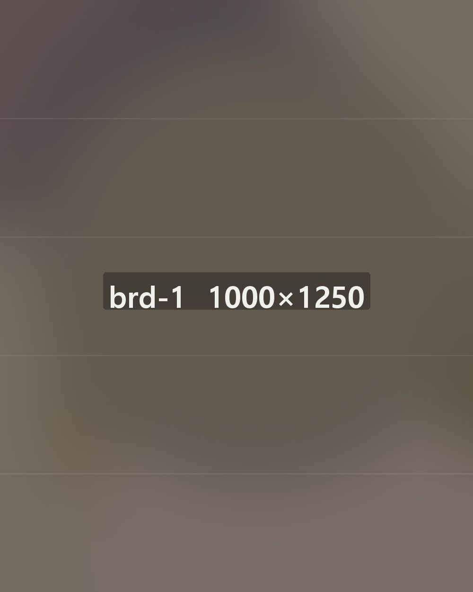
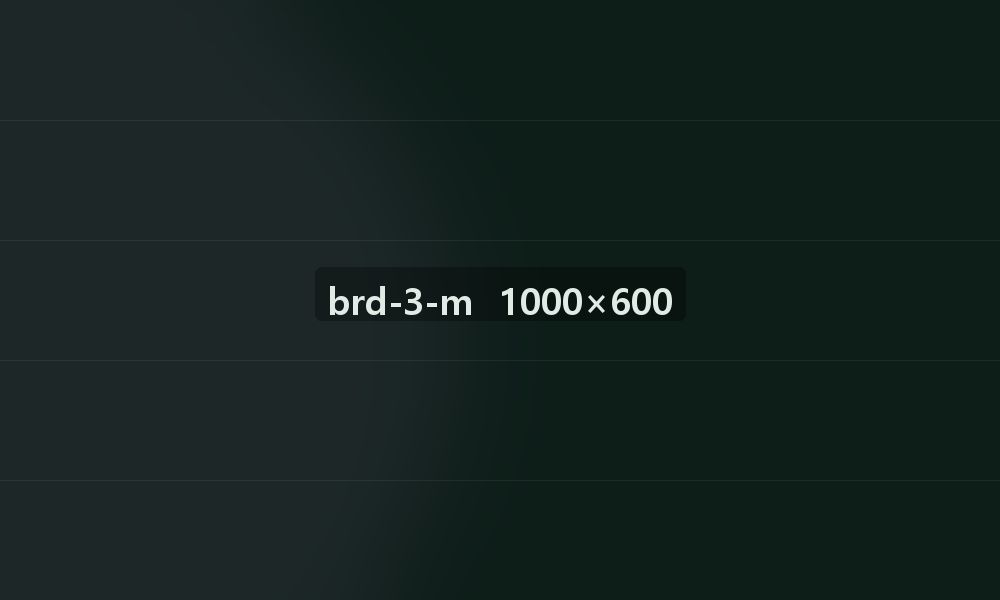
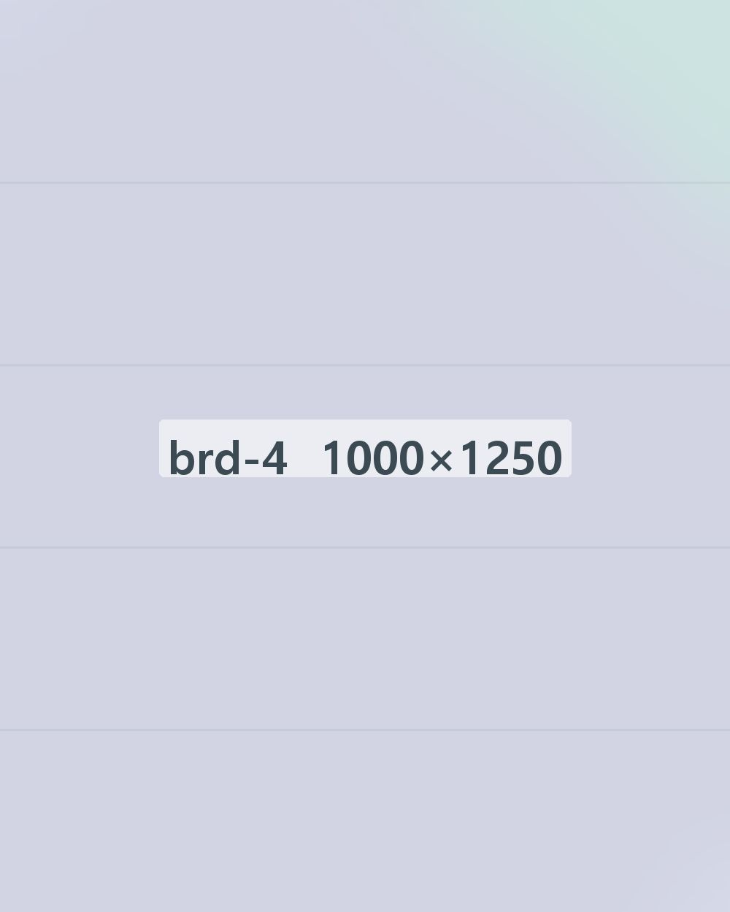
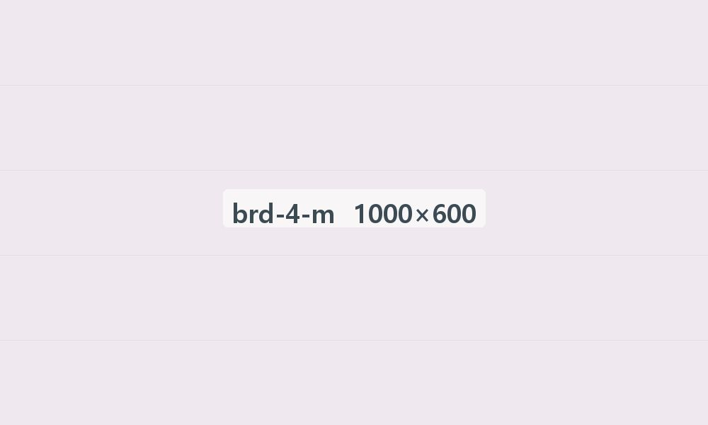
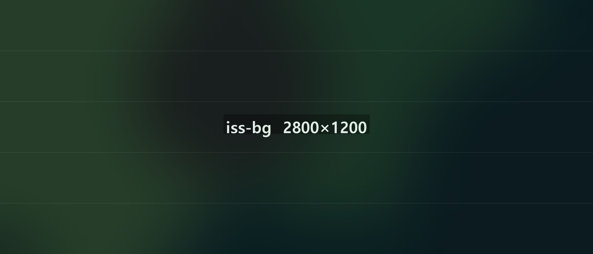

이혼·상속·가사
이혼·상속 분쟁은
감정보다 기록으로,
결과를 내다보는 법률 전략입니다.
사건의 흐름을 읽고
의뢰인의 권리를 지킵니다.
법무법인 서헌은 이혼·가사·상속 분쟁을 감정의 문제로만 보지 않고,
자료와 기준, 절차의 문제로 정리합니다. 핵심 쟁점을 증거와 기준에 따라
하나씩 정리해, 법적 근거가 있는 실현 가능한 방안을 세웁니다.
서헌의 실제 사례를
키워드로 찾아보세요.
서헌이 실제로 맡아 온 사건을 통해,
비슷한 사건의 대응 방향을 살펴보세요.

윤태오 대표변호사
- 변호사시험 합격, 법조 경력 12년
- 건설·부동산·민사 분쟁 소송 전담 변호사
- 관할 경찰서 두 곳의 수사민원 상담센터 외부 자문변호사
- 중소기업 불공정거래피해신고센터 법률자문위원

강민재 대표변호사
- 변호사시험 합격, 법조 경력 14년
- 금융회사 법무팀 사내변호사 출신
- 기업 구조조정 TF 법률 자문 변호사
- 금융당국 법률 자문관

한서윤 파트너 변호사
- 변호사시험 합격
- 금융 분쟁·금융범죄 사건 전담 변호사
- 형사 사건 수사 단계 대응 전담 변호사
- 금융·경제 전문지 칼럼

정다은 변호사
- 해오름대학교 공공행정학과 졸업
- 청람대학교 법학전문대학원 졸업
- 변호사회 성년후견인 양성 실무 교육 과정 수료
- 지방변호사회 조세 실무 연수원 수료
왜 법무법인 서헌인가?
이혼·상속·가사 사건,
민감한 분쟁일수록 ‘실제로 이행되는 결과’를 준비해야 합니다.

판결 뒤까지 내다본 결론
이혼·가사 분쟁은 판결로 끝나지 않습니다.
재산분할 실행, 양육비 지급, 면접교섭 갈등 같은 문제가 이어집니다.
서헌은 사건이 끝난 뒤까지 생각해 결론을 준비합니다.
증거로 준비하는 이혼
재산분할·양육·위자료는 ‘무엇을 입증할 수 있는가’로 정해집니다.
재산 흐름, 소득과 지출, 돌봄 기록, 대화와 생활 자료를 법원이 받아들이는 형태로 정리합니다.

조정에서 끝내는 전략
이혼·가사 사건의 상당수는 조정에서 결론이 납니다.
소송 전에 조정에서 받아들여질 합의안을 준비해,
불리한 합의를 피하면서 현실적인 결과를 얻습니다.


상담 내용 비밀 유지
이혼·가사 사건은 정보가 새는 것 자체가 위험이 될 수 있습니다.
상담 단계부터 사건이 끝난 뒤까지,
의뢰인의 사생활과 민감한 정보를 엄격하게 관리합니다.

최근 문의가 많은
분야를 먼저 살펴보세요
자주 묻는 질문
상담 전, 궁금한
내용을 확인하세요.
이혼 사건의 상당수는 조정 단계에서 합의로 마무리됩니다. 조정에서 받아들여질 합의안을 미리 준비하면 소송으로 갔을 때의 불리한 결과를 피하고 시간과 비용도 줄일 수 있습니다. 서헌은 의뢰인의 권리와 현실적인 사정을 함께 따져 조정에서 가장 나은 결과가 나오도록 대응합니다.
재산분할 합의는 보통 조정 단계나 판결 전에 이루어집니다. 합의 시점에 따라 받을 수 있는 재산 비율과 실제 권리가 달라질 수 있어, 재산 구조를 미리 검토하고 불리하지 않은 합의안을 준비하는 것이 중요합니다.
양육권은 아이의 복리를 가장 먼저 보고, 부모의 양육 능력과 생활환경, 아이와의 관계를 함께 따집니다. 면접교섭은 정기적이고 무리 없는 만남을 보장하는 방향으로 정하며, 부모 사이 갈등이 크더라도 실제로 지켜질 수 있는 방식을 찾습니다.
상속 분쟁은 유언, 재산 목록, 가족관계 같은 사실관계 확인이 핵심이며, 증빙 자료가 부족하면 권리를 지키기 어려워집니다. 서헌은 초기부터 자료를 검토하고 법리를 분석해 상속권을 지킬 방법을 세우고, 필요하면 협상과 조정, 소송까지 함께 대응합니다.
이혼·상속·가사 사건에는 민감한 정보가 많아 상담 단계부터 사건이 끝난 뒤까지 비밀을 지킵니다. 의뢰인의 사생활과 민감한 정보를 안전하게 관리해 정보가 새어 나가는 위험을 줄입니다.
오시는 길
상담 예약 후 찾아오시는 길,
이곳에서 안내합니다.
오시는 길
서울 강남구 테헤란로 123, 민트클빌딩 5층 ＊역삼역 3번 출구 도보 2분
010-4894-4905
010-4894-4905간편 상담 신청은 밤과 주말에도
받고, 다음 날 연락드립니다.